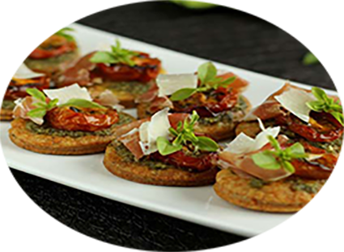

Bouchées au parmesan, pesto, tomates et jambon

Pour 8 personnes
Préparation : 40 mn
Cuisson 15 mn
Ingrédients
| Pour la päte |
| | | |
Pour la garniture |
- 150 g de farine de blé T65
- 100 g de beurre mou
- Un peu d'eau
- 50 g de parmesan râpé
- 1 c. à café d'origan séché
|
| | | |
- 1 petit pot de pesto *** recette ici ***
- 20 g de parmesan
- Quelques feuilles de basilic
- 100 g de tomates confites
- 100 g de jambon de Bayonne
- Un peu d'huile d'olive
|
Recette
- Mettez la farine, le beurre mou, l'origan et le parmesan dans le bol d'un robot.
- Mixez jusqu'à ce que la pâte forme une boule, ajoutez un peu d'eau si nécessaire.
- Filmez et réservez au frais 1 heure.
- Préchauffez le four Th. 6 (180°C).
- Couvrez une plaque de cuisson de papier sulfurisé.
- Étalez la pâte sur un demi-centimètre d'épaisseur environ.
- Découpez des cercles de 4 à 5 cm de diamètre que vous déposez au fur et à mesure sur la plaque.
- Piquez le dessus des sablés avec une fourchette puis cuisez-les une quinzaine de minutes.
- Laissez légèrement tiédir à la sortie du four puis étalez sur chaque sablé un peu de pesto.
- Ajoutez un pétale de tomate confite, un peu de jambon de Bayonne et une lamelle de parmesan.
- Terminez par quelques gouttes d'huile d'olive et un peu de basilic frais.
ASTUCES
Vous pouvez remplacer le jambon de Bayonne par du jambon blanc pour les plus jeunes.
Par du chorizo en tranches fines, pour les plus grands.
|